warning = FALSE
suppressWarnings(suppressMessages({
library(caret)
library(ggplot2)
library(dplyr)
library(readxl)
library(readr)
library(janitor)
library(FactoMineR)
library(MASS)
library(factoextra)
library(rmarkdown)
library(knitr)
library(officedown)
library(quarto)
library(gtsummary)
library(pander)
library(tinytex)
library(kernlab)}))Part 1: Detecting Olive Oil Fraud Using Unsupervised Learning
Introduction
Fraudulent adulteration of Extra-Virgin Olive Oil (EVOO) with cheaper oils continues to be a significant concern due to its economic and health implications. Traditional methods for detecting adulteration, such as Gas Chromatography-Mass Spectrometry (GC-MS), are effective but suffer from drawbacks—they are destructive, time-consuming, and costly. As a result, novel non-destructive methods are being explored, including Near-Infrared Hyperspectral Imaging (NIR-HSI).
NIR-HSI is a technique that combines imaging with spectroscopy, capturing both spatial and spectral information across a wide range of wavelengths. This makes it an ideal candidate for detecting subtle changes in EVOO that indicate adulteration. The richness of the spectral data presents a challenge: the data sets are typically large and complex, requiring advanced techniques to reduce dimensionality and reveal underlying patterns. Unsupervised learning methods, such as Principal Component Analysis (PCA) and K-Means clustering, are crucial tools for addressing this challenge ( Malavi et al., 2023).
Principal Component Analysis (PCA)
PCA is a powerful tool for dimensionality reduction, especially in the context of hyperspectral data, where hundreds of spectral bands are captured. By transforming the original variables into a smaller set of uncorrelated principal components, PCA allows us to identify the most significant spectral features contributing to variance in the dataset. This technique is particularly useful in exploring the relationships between different oils and detecting outliers or adulteration patterns without prior labeling of the data.
In this study, PCA was applied to the spectral data obtained from NIR-HSI of pure and adulterated EVOO samples. The goal was to reduce the dimensionality of the data while preserving the most critical information. This not only facilitates visualization but also prepares the data for further unsupervised classification through K-Means clustering.
K-Means Clustering
K-Means clustering is an unsupervised learning technique used to group data points into clusters based on similarity. When applied to the transformed data from PCA, K-Means can group EVOO samples based on their spectral similarities, allowing for the identification of clusters that correspond to pure and adulterated oils. The advantage of K-Means lies in its simplicity and efficiency, making it suitable for large datasets, such as those generated by NIR-HSI.
In this project, K-Means clustering was performed on the principal components derived from the PCA of NIR-HSI data. The clustering process helped to separate the pure EVOO samples from the adulterated ones, providing a preliminary classification without the need for labeled training data. This unsupervised approach serves as a foundational analysis before moving to supervised classification models.
Objectives of Part 1
Dimensionality Reduction: Utilize PCA to reduce the complexity of the hyperspectral data while retaining the most important spectral features for differentiating pure and adulterated EVOO.
Unsupervised Classification: Perform K-Means clustering on the PCA-transformed data to classify EVOO samples based on their spectral characteristics, identifying potential adulteration.
Exploratory Data Analysis: Use PCA and K-Means to uncover hidden patterns in the data, providing insights into how adulteration affects the spectral properties of EVOO.
Dataset
The dataset contains pure samples of extra-virgin olive oil and those adulterated/mixed with different cheaper oils, including safflower, corn, sesame, sunflower, canola, and soybean oils, in concentration ranges of 0-20% (m/m). The samples were analyzed by GC-MS, FTIR, Raman, UV-Vis, and HSI to determine if these methods could identify them as genuine or not.
Load Installed Packages from the R Library for the Analysis
Load and Inspect Hyperspectral Imaging Data
#Load HSI spectra data
hsi<-read_excel("HSI.xlsx")
#Check dimensions
dim(hsi)[1] 183 228#We have 183 observations and 228 variables#Check a few of the column names
colnames(hsi[,c(1:4)])[1] "sample_id" "class_1" "class_2" "perc_adulter"#Check for any missing values
anyNA(hsi)# There are no missing values[1] FALSE#Considering that we are conducting a binary classification, we will remove some columns
hsi<-hsi[,-c(1,3)]
table(hsi$class_1)
Adulterated Pure EVOO
144 39 #convert class_1 to a factor
hsi$class_1<-as.factor(hsi$class_1)
#There are two classes: The oils are either pure/authentic or adulterated#Check whether the data is normalized. We want a value between 0 and 1
print(paste('The max value is', max(hsi[,-c(1:4)]),
'and the min value is', min(hsi[,-c(1:4)])))[1] "The max value is 0.827106 and the min value is 0.016328"Load and Inspect Raman Spectroscopy Data
#Load Raman spectra data
raman<-read_excel("Raman.xlsx")
#Check dimensions
dim(raman)[1] 183 1404#We have 183 observations and 1404 variables#Bind the data to have the same columns as HSI data
raman<-cbind(hsi[,c(1,2)],raman[,-c(1:3)])
colnames(raman[,c(1:3)])#check whether the changes have been effected[1] "class_1" "perc_adulter" "500" table(raman$class_1)#Check the class distribution
Adulterated Pure EVOO
144 39 class(raman$class_1)#ensure class_1 is a factor[1] "factor"# Define the normalization function to have values of 0 and 1
min_max_normalize <- function(x) {
return((x - min(x)) / (max(x) - min(x)))
}
raman<-min_max_normalize(raman[,-c(1:2)])
print(paste('The max value is', max(raman[,-c(1:2)]), 'and the min value is', min(raman[,-c(1:2)])))[1] "The max value is 1 and the min value is 0"anyNA(raman)[1] FALSEdim(raman)[1] 183 1401Load and Inspect FTIR Spectroscopy Data
#Load FTIR spectra data
ftir<-read_excel("FTIR.xlsx")
#Check dimensions
dim(ftir)[1] 183 919#We have 183 observations and 919 variables#Bind the data to have the same columns as HSI data
ftir<-cbind(hsi[,c(1,2)],ftir[,-c(1:3)])
colnames(ftir[,c(1:3)])#check whether the changes have been effected[1] "class_1" "perc_adulter" "470.54590000000002"table(ftir$class_1)#Check the class distribution
Adulterated Pure EVOO
144 39 class(ftir$class_1)#ensure class_1 is a factor[1] "factor"print(paste('The max value is', max(ftir[,-c(1:2)]),
'and the min value is', min(ftir[,-c(1:2)])))#The data is OK[1] "The max value is 0.6911867 and the min value is 0"dim(ftir)[1] 183 918Load and Inspect UV-Vis Spectroscopy Data
#Load Uv-Vis spectra data
uv_vis<-read_excel("UVVIS.xlsx")
#Check dimensions
dim(uv_vis)[1] 183 125#Bind the data to have the same columns as HSI data
uv_vis<-cbind(hsi[,c(1,2)],uv_vis[,-c(1:4)])
colnames(uv_vis[,c(1:3)])#check whether the changes have been effected[1] "class_1" "perc_adulter" "200" table(uv_vis$class_1)#Check the class distribution
Adulterated Pure EVOO
144 39 class(uv_vis$class_1)#ensure class_1 is a factor[1] "factor"print(paste('The max value is', max(uv_vis[,-c(1:2)]),
'and the min value is', min(uv_vis[,-c(1:2)])))#The data is OK[1] "The max value is 3.631 and the min value is -0.002"dim(uv_vis)[1] 183 123# Define the normalization function to have values of 0 and 1
min_max_normalize <- function(x) {
return((x - min(x)) / (max(x) - min(x)))
}
uv_vis<-min_max_normalize(uv_vis[,-c(1:2)])
print(paste('The max value is', max(uv_vis[,-c(1:2)]),
'and the min value is', min(uv_vis[,-c(1:2)])))[1] "The max value is 1 and the min value is 0"anyNA(uv_vis)[1] FALSEdim(uv_vis)[1] 183 121#There are 183 observations and 121 covariatesLoad and Inspect GC-MS Data
#Load GC-MS data
gc_ms<-read_excel("GC_MS.xlsx")
#Check dimensions
dim(gc_ms)[1] 258 9gc_ms$class_1<-factor(gc_ms$class_1)#convert to factor# Define the normalization function to have values of 0 and 1
min_max_normalize <- function(x) {
return((x - min(x)) / (max(x) - min(x)))
}
gc<-min_max_normalize(gc_ms[,-c(1:2)])
print(paste('The max value is', max(gc), 'and the min value is', min(gc)))[1] "The max value is 1 and the min value is 0"anyNA(gc_ms)[1] FALSEgc_ms<-cbind(gc_ms[,c(1,2)],gc)Unsupervised Learning
Exploratory Data Analysis by Principal Component Analysis (PCA)
Principal Component Analysis (PCA) is vital for managing the complexity of high-dimensional spectral data from HSI, FTIR, and Raman spectroscopy. It reduces dimensionality, filters noise, extracts key features, improves computational efficiency, and addresses multicollinearity, resulting in more effective and insightful scientific analysis.
Run PCA
hsi_pca<-PCA(hsi[,-c(1,2)],graph = F)#HSI data
hsi_pca$eig[1:10,]#extracting the first 5 components' eigenvalues eigenvalue percentage of variance cumulative percentage of variance
comp 1 178.85959634 79.84803408 79.84803
comp 2 24.38800697 10.88750311 90.73554
comp 3 15.63653271 6.98059496 97.71613
comp 4 1.99152376 0.88907311 98.60521
comp 5 1.71004670 0.76341371 99.36862
comp 6 0.44934827 0.20060191 99.56922
comp 7 0.27623516 0.12331927 99.69254
comp 8 0.14579543 0.06508724 99.75763
comp 9 0.11217784 0.05007939 99.80771
comp 10 0.07117667 0.03177530 99.83948raman_pca<-PCA(raman[,-c(1,2)],graph = F)#Raman data
raman_pca$eig[1:10,]#extract the first 5 components' eigenvalues eigenvalue percentage of variance cumulative percentage of variance
comp 1 747.843264 53.4555585 53.45556
comp 2 238.933426 17.0788725 70.53443
comp 3 149.710682 10.7012639 81.23569
comp 4 48.348918 3.4559627 84.69166
comp 5 36.934864 2.6400904 87.33175
comp 6 26.899571 1.9227713 89.25452
comp 7 14.313064 1.0230925 90.27761
comp 8 7.490713 0.5354334 90.81305
comp 9 6.065781 0.4335798 91.24662
comp 10 5.423732 0.3876863 91.63431ftir_pca<-PCA(ftir[,-c(1,2)],graph = F)#FTIR data
ftir_pca$eig[1:10,]#extract the first 5 components' eigenvalues eigenvalue percentage of variance cumulative percentage of variance
comp 1 780.4782964 85.20505419 85.20505
comp 2 100.1295634 10.93117505 96.13623
comp 3 21.6371085 2.36212975 98.49836
comp 4 9.7074370 1.05976386 99.55812
comp 5 1.6805370 0.18346474 99.74159
comp 6 0.7223977 0.07886438 99.82045
comp 7 0.5557826 0.06067496 99.88113
comp 8 0.4300497 0.04694866 99.92808
comp 9 0.2056143 0.02244698 99.95052
comp 10 0.1083039 0.01182357 99.96235uv_vis_pca<-PCA(uv_vis[,-c(1,2)],graph = F)#UV-Vis data
uv_vis_pca$eig[1:10,]#extract the first 5 components' eigenvalues eigenvalue percentage of variance cumulative percentage of variance
comp 1 88.6460628 74.4924897 74.49249
comp 2 13.9484433 11.7213809 86.21387
comp 3 6.6394665 5.5793836 91.79325
comp 4 4.7728806 4.0108240 95.80408
comp 5 2.2196215 1.8652281 97.66931
comp 6 0.8358126 0.7023636 98.37167
comp 7 0.4465317 0.3752367 98.74691
comp 8 0.3373078 0.2834519 99.03036
comp 9 0.2660613 0.2235809 99.25394
comp 10 0.2102093 0.1766465 99.43059gc_ms_pca<-PCA(gc_ms[,-c(1,2)],graph = F)#GC-MS data
gc_ms_pca$eig[1:7,] eigenvalue percentage of variance cumulative percentage of variance
comp 1 2.7496514 39.2807343 39.28073
comp 2 1.2952854 18.5040767 57.78481
comp 3 1.1811070 16.8729572 74.65777
comp 4 0.8510186 12.1574083 86.81518
comp 5 0.4893181 6.9902585 93.80543
comp 6 0.4180069 5.9715265 99.77696
comp 7 0.0156127 0.2230386 100.00000Scree Plots
HSI
s1<-fviz_eig(hsi_pca, addlabels = TRUE, ylim = c(0, 90),xlim=c(1,5), main = 'HSI Scree Plot',barfill = "chocolate1",hjust = 0.5,ncp = 9,ggtheme = theme_bw(),xlab = "PCs", ylab = "% variance")+
theme(plot.title = element_text(hjust = 0.5))+
theme(panel.grid = element_blank())
print(s1)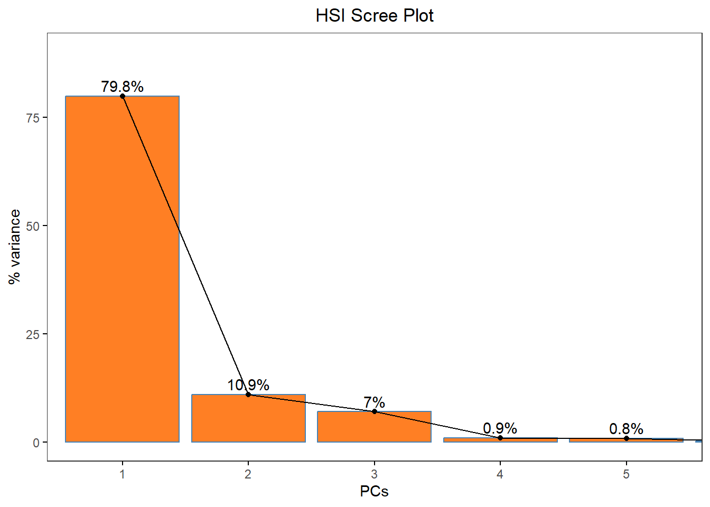
Raman
s2<-fviz_eig(raman_pca, addlabels = TRUE, ylim = c(0, 60),xlim=c(1,5),main = 'Raman Scree Plot',barfill = "greenyellow",hjust = 0.5,ncp = 20,ggtheme = theme_bw(),xlab = "PCs",ylab = "% variance")+
theme(plot.title = element_text(hjust = 0.5))+
theme(panel.grid = element_blank())
print(s2)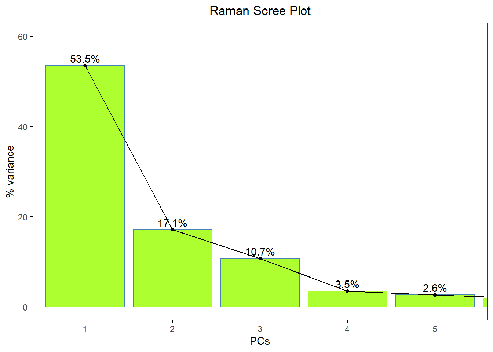
FTIR
s3<-fviz_eig(ftir_pca, addlabels = TRUE, ylim = c(0, 90),xlim=c(1,5),main = 'FTIR Scree Plot',barfill = "dodgerblue1",hjust = 0.5,ncp = 7,ggtheme = theme_bw(),xlab = "PCs", ylab = "% variance")+
theme(plot.title = element_text(hjust = 0.5))+
theme(panel.grid = element_blank())
print(s3)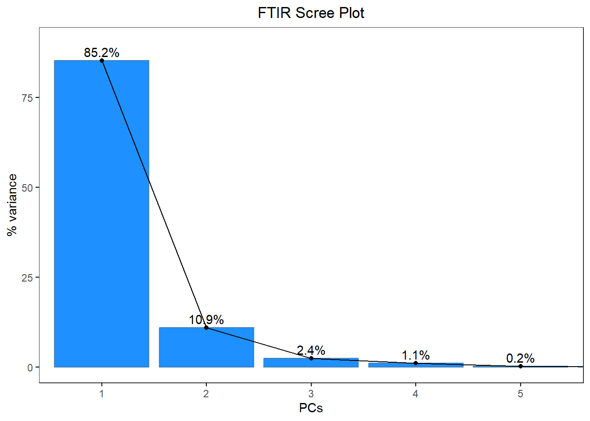
Uv-Vis
s4<-fviz_eig(uv_vis_pca, addlabels = TRUE, ylim = c(0, 90),xlim=c(1,5),main = 'UV-Vis Scree Plot',barfill = "goldenrod4",hjust = 0.5,ncp = 15,ggtheme = theme_bw(),xlab = "PCs", ylab = "% variance")+
theme(plot.title = element_text(hjust = 0.5))+
theme(panel.grid = element_blank())
print(s4)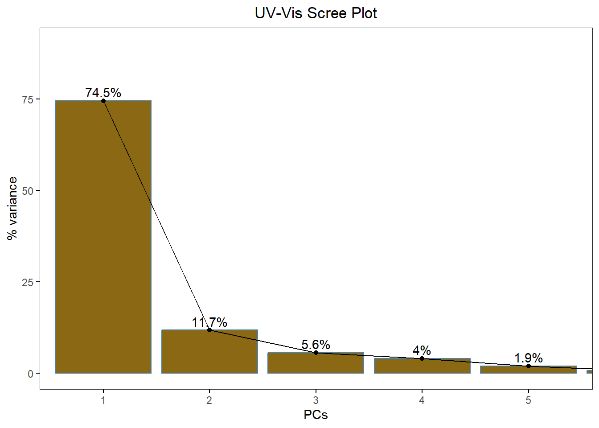
#Patch together the scree plots
gridExtra::grid.arrange(s1,s2,s3,s4, nrow =2)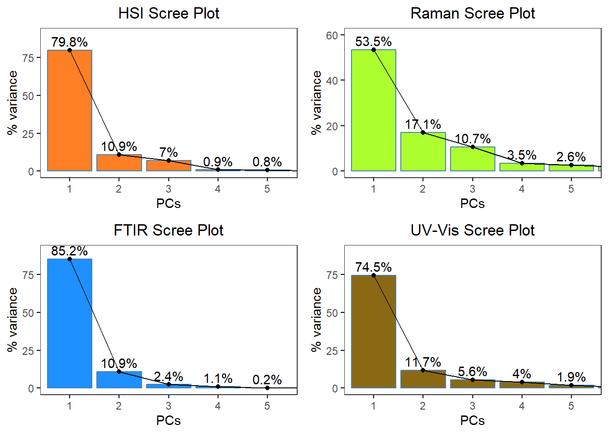
GC-MS
s5<-fviz_eig(gc_ms_pca, addlabels = TRUE, ylim = c(0, 40),main = 'GC-MS',barfill = "lightblue",hjust = 0.5,ncp = 8,ggtheme = theme_bw(),xlab = "PCs", ylab = "% variance")+
theme(plot.title = element_text(hjust = 0.5))+
theme(panel.grid = element_blank())
print(s5)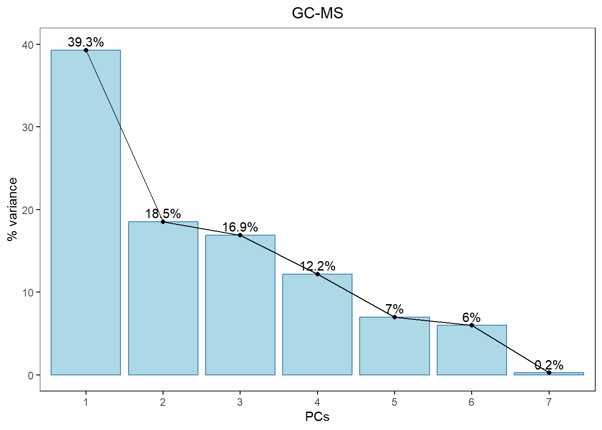
- As observed from the data, more than 80% of the variation in the data from each of the spectroscopic technique can be explained by the the first 3 PCs.
Visualization of PC Scores
Different principal components will be examined to visualize any patterns from our data. The next step will be to create a new data frame for each technique to be used in subsequent analysis.
#HSI Data
hsi_new<-as.data.frame(hsi_pca$ind$coord) #Extract the PCs
colnames(hsi_new)<-c("PC_1","PC_2", "PC_3","PC_4","PC_5")
hsi_new<-cbind(hsi[,c(1,2)],hsi_new)#Bind with the dependent variables
head(hsi_new)#Raman Data
raman_new<-as.data.frame(raman_pca$ind$coord) #Extract the PCs
colnames(raman_new)<-c("PC_1","PC_2", "PC_3","PC_4","PC_5")
raman_new<-cbind(hsi[,c(1,2)],raman_new)#Bind with the dependent variables
head(raman_new)#FTIR Data
ftir_new<-as.data.frame(ftir_pca$ind$coord) #Extract the PCs
colnames(ftir_new)<-c("PC_1","PC_2", "PC_3","PC_4","PC_5")
ftir_new<-cbind(hsi[,c(1,2)],ftir_new)#Bind with the dependent variables
head(ftir_new)#Uv_Vis Data
uvvis_new<-as.data.frame(uv_vis_pca$ind$coord) #Extract the PCs
colnames(uvvis_new)<-c("PC_1","PC_2", "PC_3","PC_4","PC_5")
uvvis_new<-cbind(hsi[,c(1,2)],uvvis_new)#Bind with the dependent variables
head(uvvis_new)#GC-MS Data
gc_new<-as.data.frame(gc_ms_pca$ind$coord) #Extract the PCs
colnames(gc_new)<-c("PC_1","PC_2", "PC_3","PC_4","PC_5")
gc_new<-cbind(gc_ms[,c(1,2)],gc_new)#Bind with the dependent variables
head(gc_new)PC Plots
# HSI PC Plot
p1 <- hsi_new %>%
ggplot(mapping = aes(x = PC_1, y = PC_2, shape = class_1, color = perc_adulter)) +
geom_point() +
labs(x = "PC1 (79.8%)", y = "PC2 (10.9%)",title = "HSI PC Plot", shape = "Oil type", color = "Percent Adulteration") +
theme_bw() +
theme(
panel.border = element_rect(color = 'black', fill = NA),
panel.grid = element_blank(),
axis.text.x = element_text(color = 'black', size = 10),
axis.text.y = element_text(color = 'black', size = 10),
aspect.ratio = 1,
axis.title.x = element_text(size = 9),
axis.title.y = element_text(size = 9),
plot.title = element_text(size = 9, hjust = 0.5),
legend.title = element_text(size = 8),
legend.text = element_text(size = 6),
legend.position = "none") +
scale_color_gradient(low = "#000000", high = "red") +
stat_ellipse(aes(group = class_1),
level = 0.95,
geom = "polygon", alpha = 0.2,
color = 'black', linewidth = 0.6)#Raman Plot
p2 <- raman_new %>%
ggplot(mapping = aes(x = PC_2, y = PC_3, shape = class_1, color = perc_adulter)) +
geom_point() +
labs(x = "PC2 (17.1%)", y = "PC3 (10.7%)",title = "Raman PC Plot", shape = "Oil type", color = "Percent Adulteration") +
theme_bw() +
theme(
panel.border = element_rect(color = 'black', fill = NA),
axis.text.x = element_text(color = 'black', size = 10),
panel.grid = element_blank(),
axis.text.y = element_text(color = 'black', size = 10),
aspect.ratio = 1,
axis.title.x = element_text(size = 9),
axis.title.y = element_text(size = 9),
plot.title = element_text(size = 9, hjust = 0.5),
legend.title = element_text(size = 7),
legend.text = element_text(size = 6)) +
scale_color_gradient(low = "#000000", high = "red") +
stat_ellipse(aes(group = class_1),
level = 0.95,
geom = "polygon", alpha = 0.2,
color = 'black', linewidth = 0.6)#FTIR Plot
p3 <- ftir_new %>%
ggplot(mapping = aes(x = PC_2, y = PC_3, shape = class_1, color = perc_adulter)) +
geom_point() +
labs(x = "PC2 (10.9%)", y = "PC3 (7.0%)",title = "FTIR PC Plot", shape = "Oil type", color = "Percent Adulteration") +
theme_bw() +
theme(
panel.border = element_rect(color = 'black', fill = NA),
axis.text.x = element_text(color = 'black', size = 10),
panel.grid = element_blank(),
axis.text.y = element_text(color = 'black', size = 10),
aspect.ratio = 1,
axis.title.x = element_text(size = 9),
axis.title.y = element_text(size = 9),
plot.title = element_text(size = 9, hjust = 0.5),
legend.title = element_text(size = 7),
legend.text = element_text(size = 6),
legend.position = "none") +
scale_color_gradient(low = "#000000", high = "red") +
stat_ellipse(aes(group = class_1),
level = 0.95,
geom = "polygon", alpha = 0.2,
color = 'black', linewidth = 0.6)#Uv_Vis Plot
p4 <- uvvis_new%>%
ggplot(mapping = aes(x = PC_1, y = PC_2, shape = class_1, color = perc_adulter)) +
geom_point() +
labs(x = "PC1 (74.5%)", y = "PC2 (11.7%)",title = "Uv_Vis PC Plot", shape = "Oil type", color = "Percent Adulteration") +
theme_bw() +
theme(
panel.border = element_rect(color = 'black', fill = NA),
panel.grid = element_blank(),
axis.text.x = element_text(color = 'black', size = 10),
axis.text.y = element_text(color = 'black', size = 10),
aspect.ratio = 1,
axis.title.x = element_text(size = 9),
axis.title.y = element_text(size = 9),
plot.title = element_text(size = 9, hjust = 0.5),
legend.title = element_text(size = 7),
legend.text = element_text(size = 6)) +
scale_color_gradient(low = "#000000", high = "red") +
stat_ellipse(aes(group = class_1),
level = 0.95,
geom = "polygon", alpha = 0.2,
color = 'black', linewidth = 0.6)Patch the PC Plots together
suppressWarnings(suppressMessages(library(gridExtra)))
grid.arrange(p1,p2,p3,p4, nrow = 2)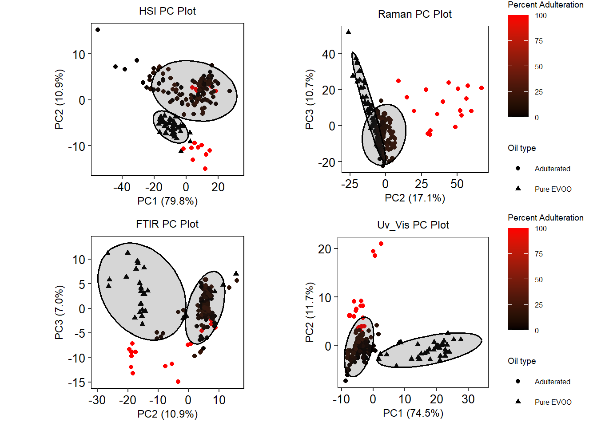
#GC-MS Plot
p5 <- gc_new %>%
ggplot(mapping = aes(x = PC_1, y = PC_2, shape = class_1, color = perc_adulter)) +
geom_point() +
labs(x = "PC1 (39.3%)", y = "PC2 (18.5%)",title = "GC-MS PC Plot", shape = "Oil type", color = "Percent Adulteration") +
theme_bw() +
theme(
panel.border = element_rect(color = 'black', fill = NA),
panel.grid = element_blank(),
axis.text.x = element_text(color = 'black', size = 10),
axis.text.y = element_text(color = 'black', size = 10),
aspect.ratio = 1,
axis.title.x = element_text(size = 9),
axis.title.y = element_text(size = 9),
plot.title = element_text(size = 9, hjust = 0.5),
legend.title = element_text(size = 7),
legend.text = element_text(size = 6)) +
scale_color_gradient(low = "#000000", high = "red") +
stat_ellipse(aes(group = class_1),
level = 0.95,
geom = "polygon", alpha = 0.2,
color = 'black', linewidth = 0.6)
#Display plot
p5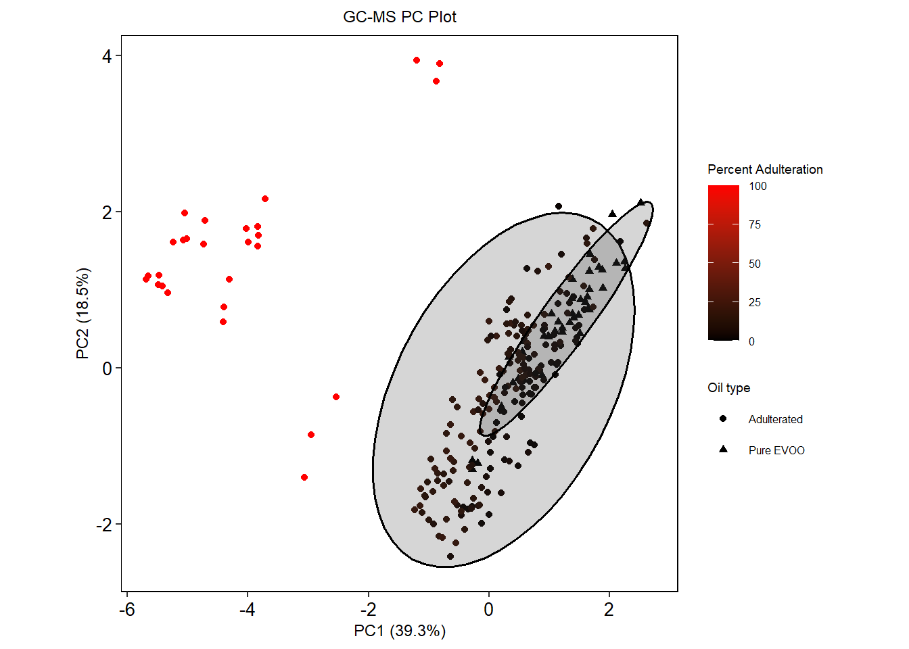
PCA Insights
- PCA results indicate interesting patterns. Although the separation does not appear to be very clear, authentic olive oil tends to separate from adulterated olive oils, especially with HSI, UV-Vis, and GC-MS. PCA, however, demonstrates weakness in discerning oils adulterated at different levels, hence the need for additional supervised algorithms.
PC variable contributions
This section investigates the contribution of different variables to the variation in principal components (PCs). By analyzing the loadings of each variable on the principal components, we can determine which variables have the most significant impact on the observed patterns in the data. This analysis helps to identify key features that drive the separation of samples in the PCA plot.
#HSI
h1<-fviz_contrib(hsi_pca, choice = "var", top = 5,axes = 1, sort.val = 'desc', fill = "olivedrab")
h2<-fviz_contrib(hsi_pca, choice = "var", top = 5,axes = 2, sort.val = 'desc', fill = "cadetblue")
grid.arrange(h1,h2, nrow = 1)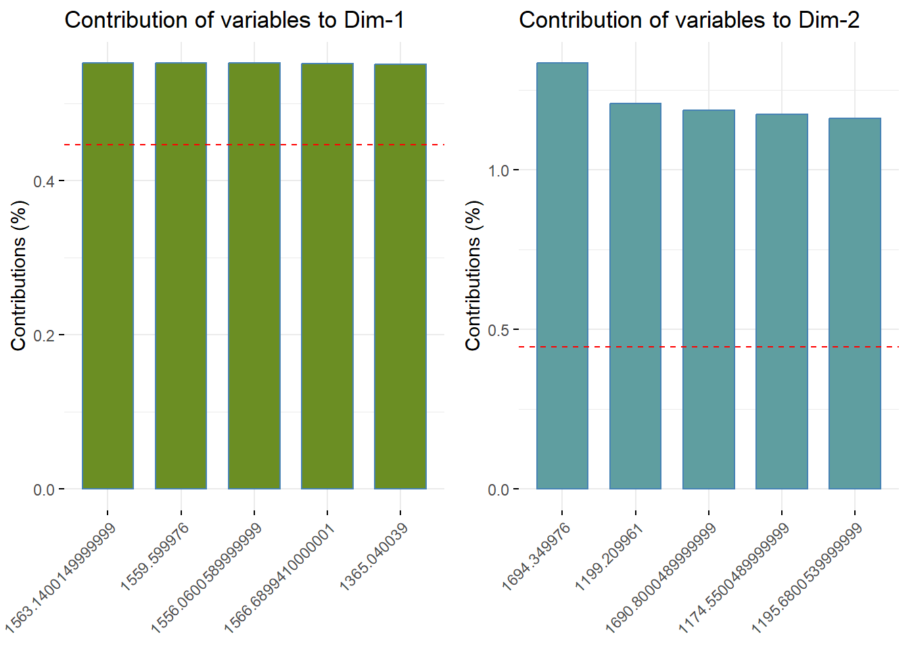
#Raman
r1<-fviz_contrib(raman_pca, choice = "var", top = 5,axes = 1, sort.val = 'desc', fill = "#E7B800")
r2<-fviz_contrib(raman_pca, choice = "var", top = 5,axes = 2, sort.val = 'desc', fill = "#00AFBB")
grid.arrange(r1,r2, nrow = 1)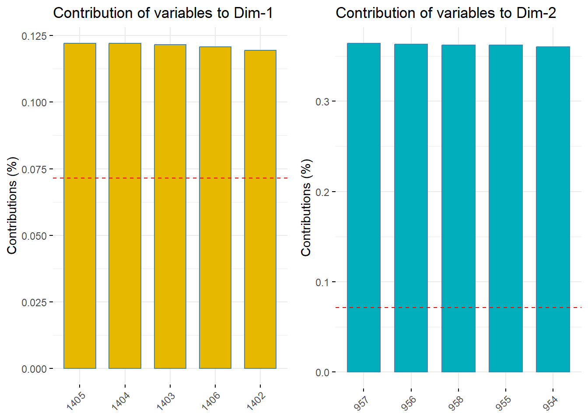
#FTIR
f1<-fviz_contrib(ftir_pca, choice = "var", top = 5,axes = 1, sort.val = 'desc', fill = "tan4")
f2<-fviz_contrib(ftir_pca, choice = "var", top = 5,axes = 2, sort.val = 'desc', fill = "cornflowerblue")
grid.arrange(f1,f2, nrow = 1)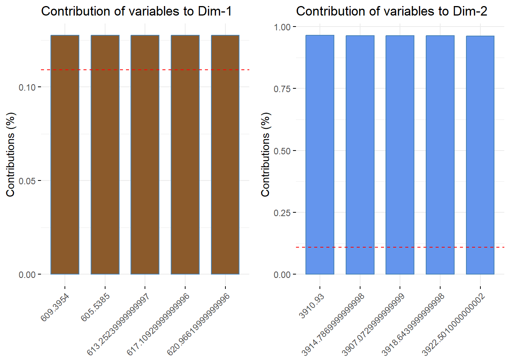
#Uv-Vis
uv1<-fviz_contrib(uv_vis_pca, choice = "var", top = 5,axes = 1, sort.val = 'desc', fill = "thistle")
uv2<-fviz_contrib(uv_vis_pca, choice = "var", top = 5,axes = 2, sort.val = 'desc', fill = "powderblue")
grid.arrange(uv1,uv2, nrow = 1)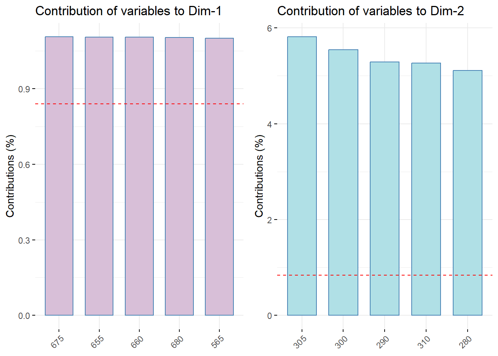
#GC-MS
gc1<-fviz_contrib(gc_ms_pca, choice = "var", top = 5,axes = 1, sort.val = 'desc', fill = "chocolate")
gc2<-fviz_contrib(gc_ms_pca, choice = "var", top = 5,axes = 2, sort.val = 'desc', fill = "gray58")
grid.arrange(gc1,gc2, nrow = 1)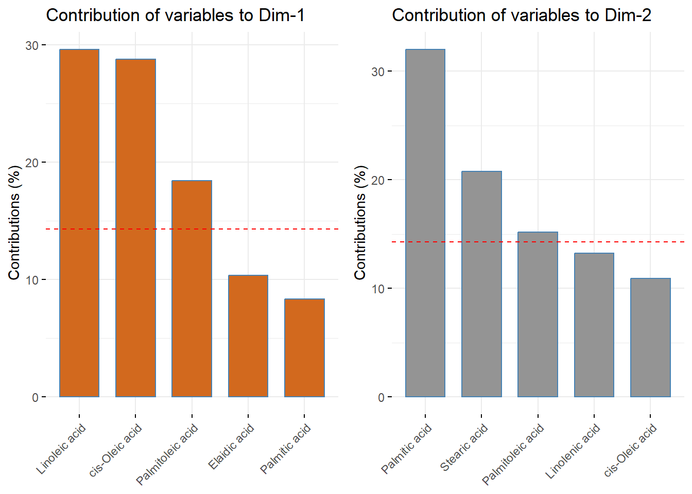
K-Means Clustering
K-means clustering is an unsupervised machine learning algorithm used to partition a dataset into K distinct, non-overlapping groups (or clusters) based on feature similarity. It aims to minimize the variance within each cluster and maximize the variance between clusters.
- Let us find the number of clusters based on silhoutte method
# optimal number of clusters for HSI
hsi_clust<-fviz_nbclust(hsi[,-c(1:2)], kmeans, method = "silhouette", k.max=10)
print(hsi_clust)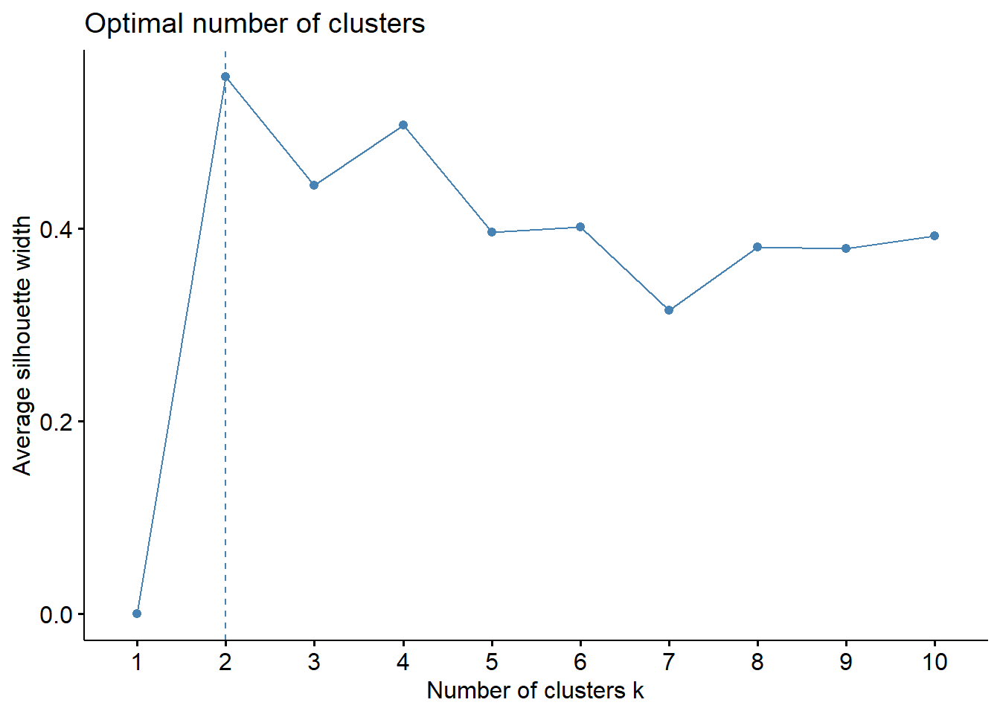
# optimal number of clusters for Raman
raman_clust<-fviz_nbclust(raman, kmeans, method = "silhouette", k.max=10)
print(raman_clust)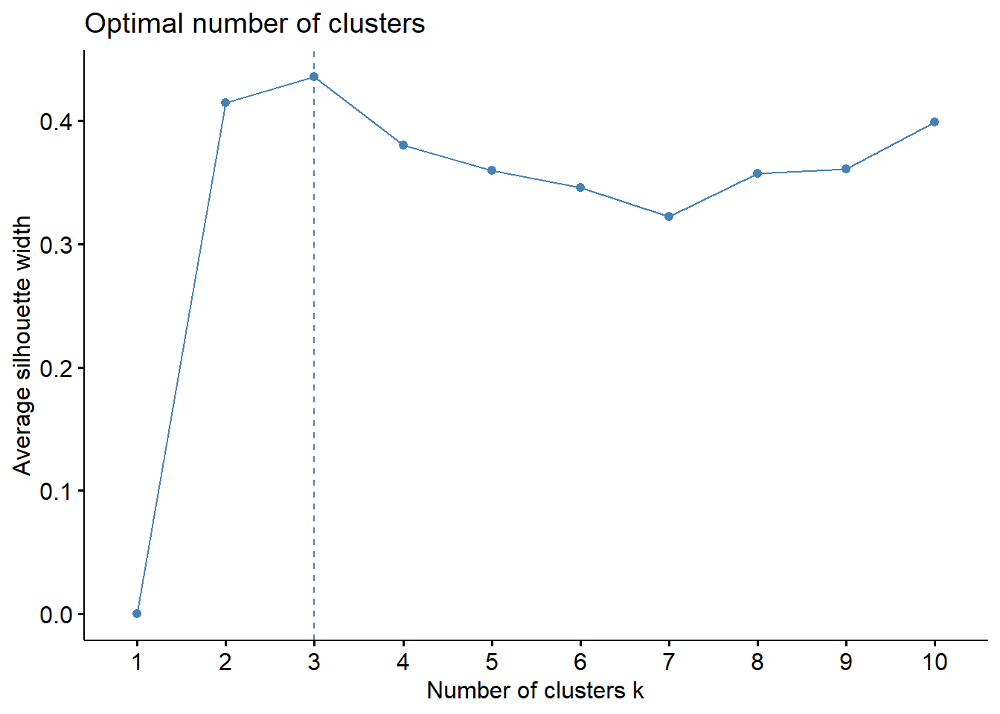
#optimal number of clusters for FTIR
ftir_clust<-fviz_nbclust(ftir[,-c(1,2)], kmeans, method = "silhouette", k.max=10)
print(ftir_clust)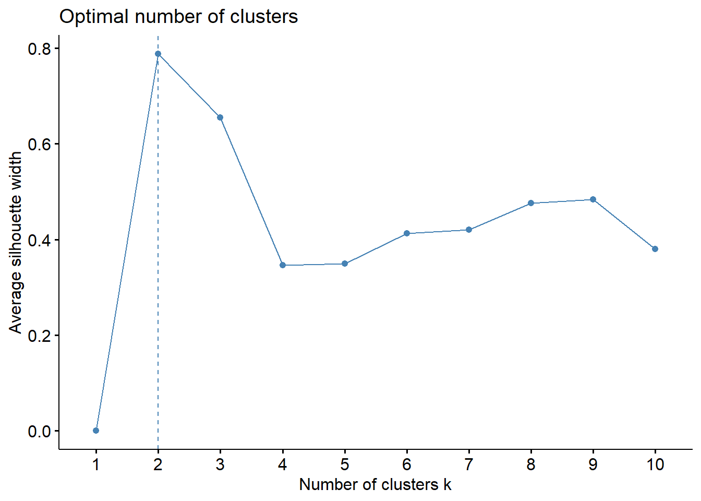
#optimal number of clusters for UV-Vis
uvvis_clust<-fviz_nbclust(uv_vis, kmeans, method = "silhouette", k.max=10)
plot(uvvis_clust)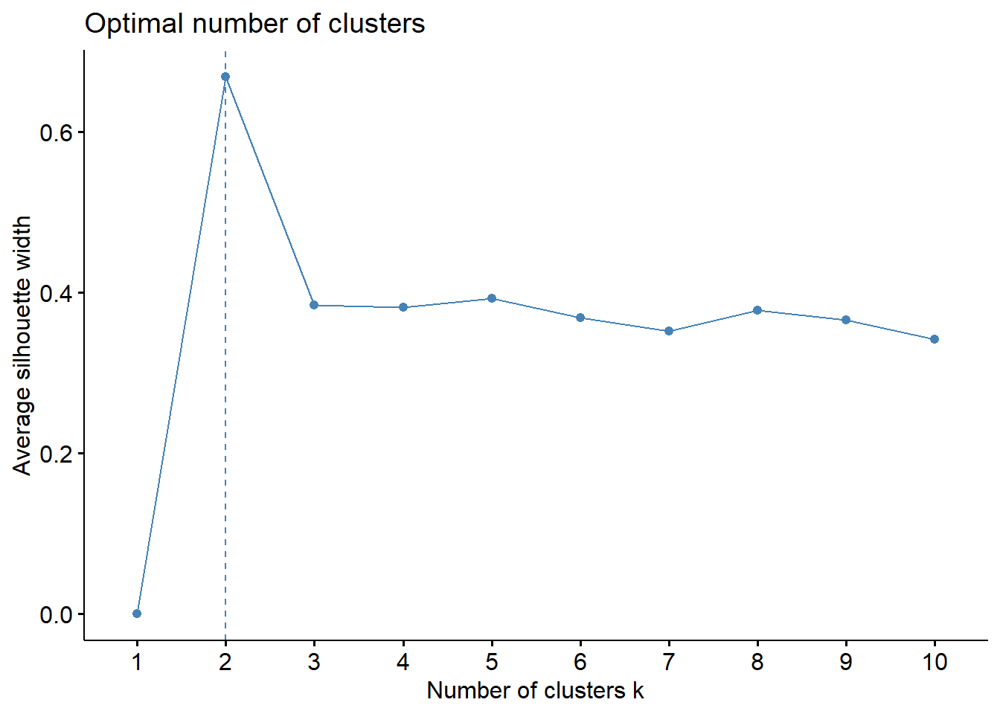
#optimal number of clusters for gc-ms
gc_clust<-fviz_nbclust(gc, kmeans, method = "silhouette", k.max=10)
print(gc_clust)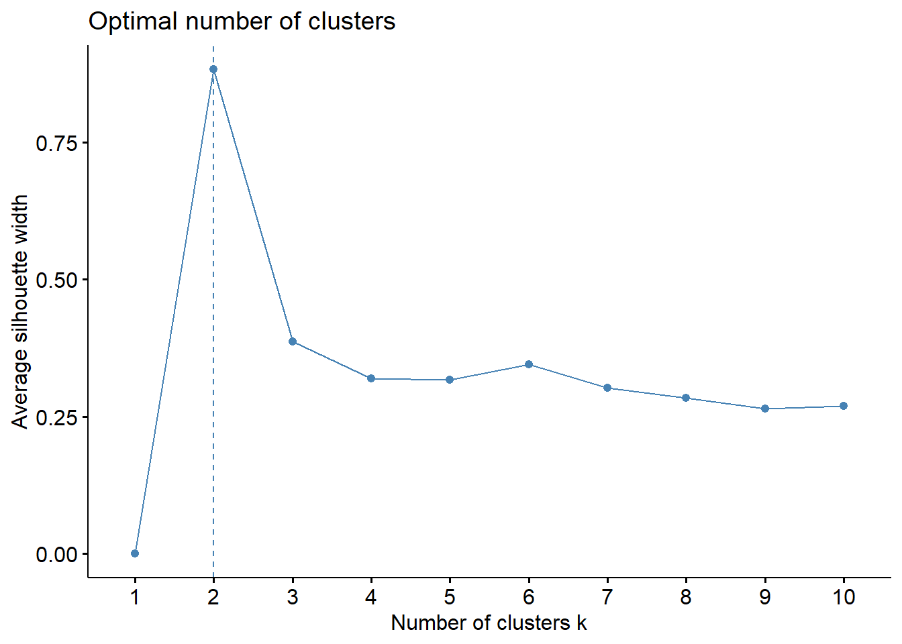
- Then let us perform k-means clustering with the optimal number of clusters
#HSI k-means analysis and plots
hsi_kmeans <- kmeans(hsi[,-c(1,2)],2)
cluster<- hsi_kmeans$cluster
hsi_k_data <-cbind(hsi_new,cluster)
hsi_k_data$cluster<-as.factor(hsi_k_data$cluster)
hsi_k_data %>%
ggplot(mapping = aes(x = PC_1, y = PC_2, color = cluster, shape = class_1)) +
geom_point() +
labs(x = "PC1", y = "PC2",title = "HSI k-means cluster Plot")+
theme_bw() +
theme(
panel.border = element_rect(color = 'black', fill = NA),
panel.grid = element_blank(),
axis.text.x = element_text(color = 'black', size = 10),
axis.text.y = element_text(color = 'black', size = 10),
aspect.ratio = 1,
axis.title.x = element_text(size = 9),
axis.title.y = element_text(size = 9),
plot.title = element_text(size = 9, hjust = 0.5),
legend.title = element_text(size = 8),
legend.text = element_text(size = 6),
legend.position = "right")+
scale_color_manual(values = c("blue", "red"))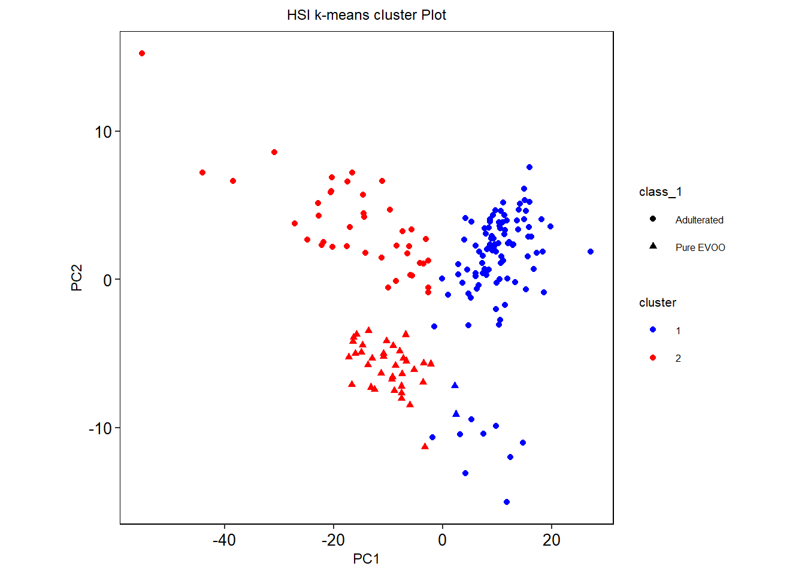
#Raman k-means analysis and plotting
raman_kmeans <- kmeans(raman,3)
cluster<- raman_kmeans$cluster
raman_k_data <-cbind(raman_new,cluster)
raman_k_data$cluster<-as.factor(raman_k_data$cluster)
raman_k_data %>%
ggplot(mapping = aes(x = PC_1, y = PC_2, color = cluster, shape = class_1)) +
geom_point() +
labs(x = "PC1", y = "PC2",title = "Raman k-means cluster Plot")+
theme_bw() +
theme(
panel.border = element_rect(color = 'black', fill = NA),
panel.grid = element_blank(),
axis.text.x = element_text(color = 'black', size = 10),
axis.text.y = element_text(color = 'black', size = 10),
aspect.ratio = 1,
axis.title.x = element_text(size = 9),
axis.title.y = element_text(size = 9),
plot.title = element_text(size = 9, hjust = 0.5),
legend.title = element_text(size = 8),
legend.text = element_text(size = 6),
legend.position = "right")+
scale_color_manual(values = c("blue", "red","black"))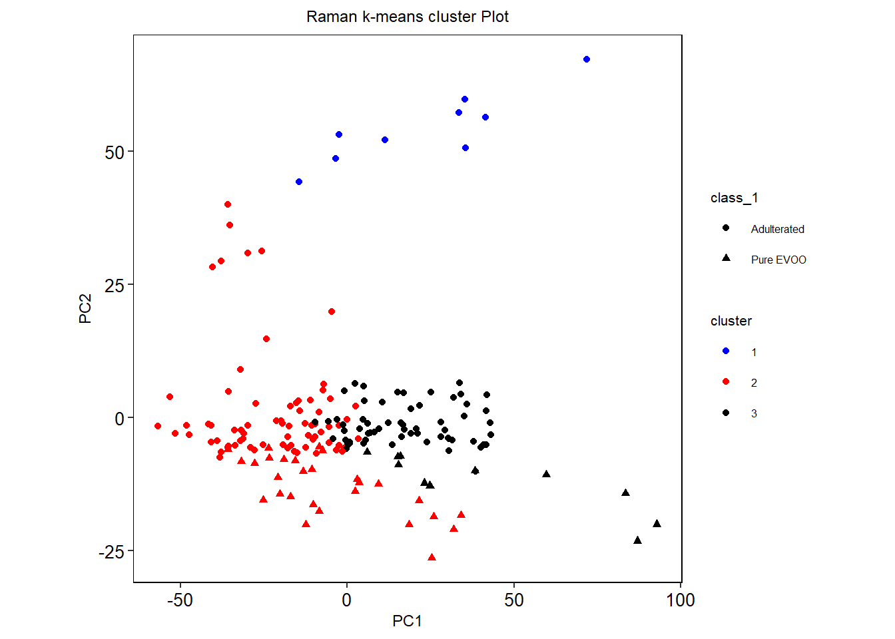
#FTIR k-means analysis and plotting
ftir_kmeans <- kmeans(ftir[,-c(1,2)],3)
cluster<- ftir_kmeans$cluster
ftir_k_data <-cbind(ftir_new,cluster)
ftir_k_data$cluster<-as.factor(ftir_k_data$cluster)
ftir_k_data %>%
ggplot(mapping = aes(x = PC_1, y = PC_2, color = cluster, shape = class_1)) +
geom_point() +
labs(x = "PC1", y = "PC2",title = "FTIR k-means cluster Plot")+
theme_bw() +
theme(
panel.border = element_rect(color = 'black', fill = NA),
panel.grid = element_blank(),
axis.text.x = element_text(color = 'black', size = 10),
axis.text.y = element_text(color = 'black', size = 10),
aspect.ratio = 1,
axis.title.x = element_text(size = 9),
axis.title.y = element_text(size = 9),
plot.title = element_text(size = 9, hjust = 0.5),
legend.title = element_text(size = 8),
legend.text = element_text(size = 6),
legend.position = "right")+
scale_color_manual(values = c("blue", "red","black"))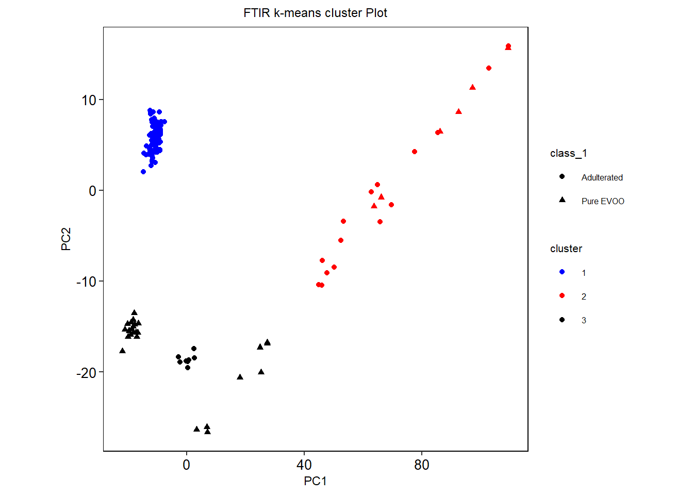
#UV-Vis k-means analysis and plotting
uvvis_kmeans <- kmeans(uv_vis,2)
cluster<- uvvis_kmeans$cluster
uvvis_k_data <-cbind(uvvis_new,cluster)
uvvis_k_data$cluster<-as.factor(uvvis_k_data$cluster)
uvvis_k_data %>%
ggplot(mapping = aes(x = PC_1, y = PC_2, color = cluster, shape = class_1)) +
geom_point() +
labs(x = "PC1", y = "PC2",title = "UV-Vis k-means cluster Plot")+
theme_bw() +
theme(
panel.border = element_rect(color = 'black', fill = NA),
panel.grid = element_blank(),
axis.text.x = element_text(color = 'black', size = 10),
axis.text.y = element_text(color = 'black', size = 10),
aspect.ratio = 1,
axis.title.x = element_text(size = 9),
axis.title.y = element_text(size = 9),
plot.title = element_text(size = 9, hjust = 0.5),
legend.title = element_text(size = 8),
legend.text = element_text(size = 6),
legend.position = "right")+
scale_color_manual(values = c("blue", "red"))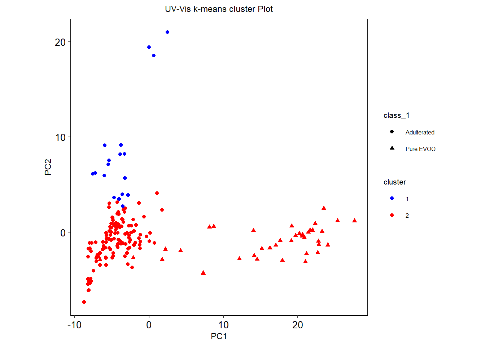
#GC-MS k-means analysis and plotting
gc_kmeans <- kmeans(gc,2)
cluster<- gc_kmeans$cluster
gc_k_data <-cbind(gc_new,cluster)
gc_k_data$cluster<-as.factor(gc_k_data$cluster)
gc_k_data %>%
ggplot(mapping = aes(x = PC_1, y = PC_2, color = cluster, shape = class_1)) +
geom_point() +
labs(x = "PC1", y = "PC2",title = "GC-MS k-means cluster Plot")+
theme_bw() +
theme(
panel.border = element_rect(color = 'black', fill = NA),
panel.grid = element_blank(),
axis.text.x = element_text(color = 'black', size = 10),
axis.text.y = element_text(color = 'black', size = 10),
aspect.ratio = 1,
axis.title.x = element_text(size = 9),
axis.title.y = element_text(size = 9),
plot.title = element_text(size = 9, hjust = 0.5),
legend.title = element_text(size = 8),
legend.text = element_text(size = 6),
legend.position = "right")+
scale_color_manual(values = c("blue", "red"))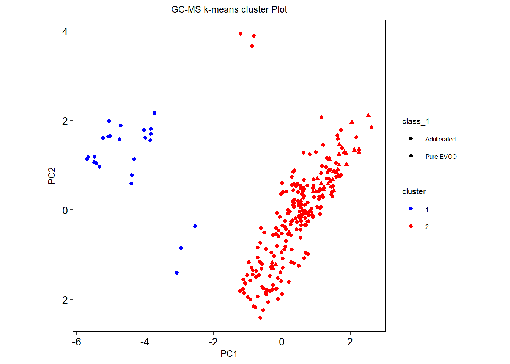
- Based on the findings from k-means clustering, an overlap of clusters for the two expected groups is observed. Unsupervised learning, therefore, is not sufficient for separating pure EVOO from adulterated samples, highlighting the need for supervised classification.
Summary
This section of the project demonstrates how unsupervised learning techniques, particularly PCA and K-Means clustering, can be applied to the complex spectral data obtained from NIR-HSI. These methods provide a powerful way to reduce data complexity and uncover patterns that may not be immediately apparent, laying the groundwork for further classification using supervised machine learning models.
Way Forward to Part 2: Supervised Classification Using Machine Learning
Now that unsupervised learning techniques like PCA and K-Means clustering have helped reduce the dimensionality of the Near-Infrared Hyperspectral Imaging (NIR-HSI) data and revealed underlying patterns, the next step is to leverage supervised classification methods to develop robust models that can distinguish between pure and adulterated Extra-Virgin Olive Oil (EVOO).